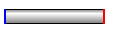
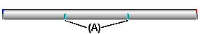

event duration bar
A user-interface element on the timeline (right) pane of the Animation Editor tool.
Event duration bars allow you to visualize and control the timing of events in an assembly animation.
Event duration bars represent the start time, elapsed time, and end time for an animation event. There are two basic types of event duration bars:
-
Duration bars for explode, appearance, and motor events.

-
Duration bars for camera and motion path events. Duration bars for these event types also support key frames (A).

You can move and modify duration bars using the cursor and shortcut menu commands.